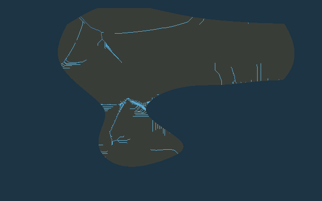
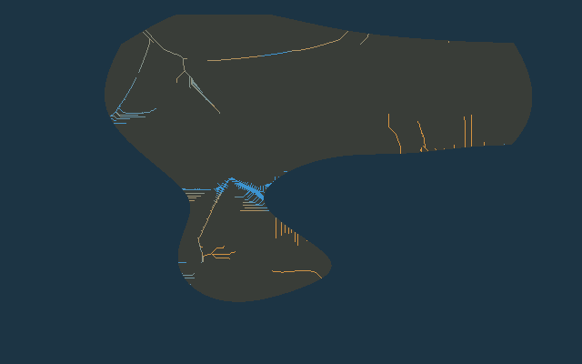
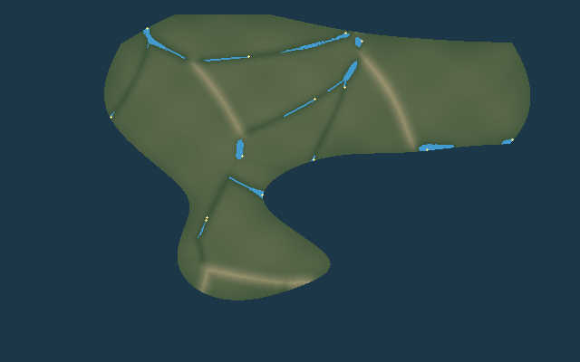

Geo
World Generator
算法原型
返回世界总览
河流与湖泊
降水 → 地表径流 → 河流 / 湖泊 / 湿地
这一步回答“水最终会流到哪里”。
降水落到陆地后沿高程向下汇聚，小水流逐渐合成支流和主河；封闭低地可能形成湖泊，平缓而湿润的低地可能形成湿地。图里的河线只是宏观骨架，不是最终方块宽度。
① 排水计算用的高程
让水能稳定找到下游方向
② 洼地有多深
越深越可能成为湖盆
③ 地表产生多少径流
降水扣除渗透等损失后的水量
④ 水往哪个方向流
每个区域寻找自己的下游
⑤ 下游汇聚了多少水
越亮通常越接近大河主干
⑥ 流域分区
最终流向同一出口的区域属于同一流域
⑦ 河网
高汇流量路径提取
⑧ 湖泊候选
填洼深度 + 水量供应
⑨ 湿地候选
低坡度 + 高汇流 + 较稳定水分
⑩ 主河与支流层级
两条同等级支流汇合后河流等级提升

⑪ 常流 / 季节河倾向
蓝=常流倾向 · 黄=季节河倾向

⑫ 已识别的湖泊
蓝=湖区 · 黄=水位足够高时的潜在出水口
